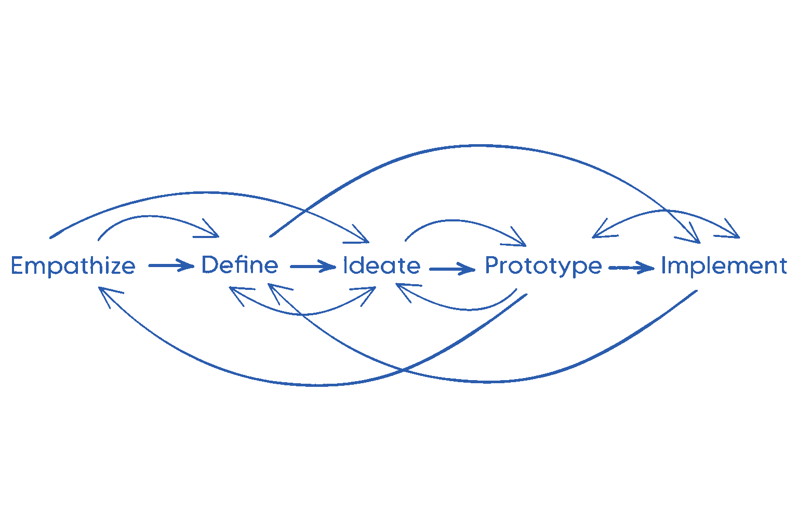
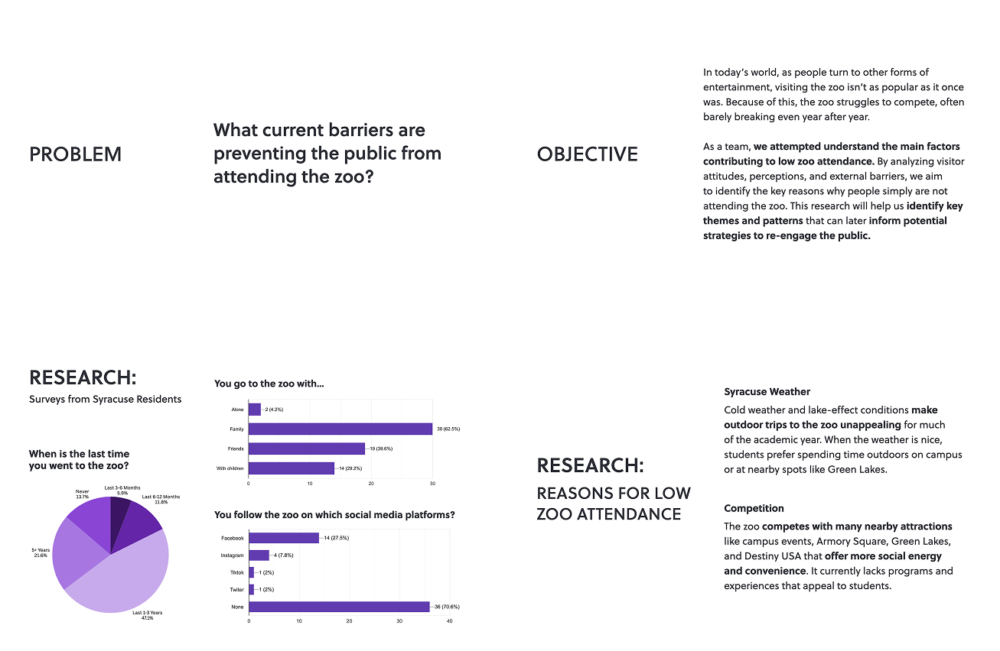
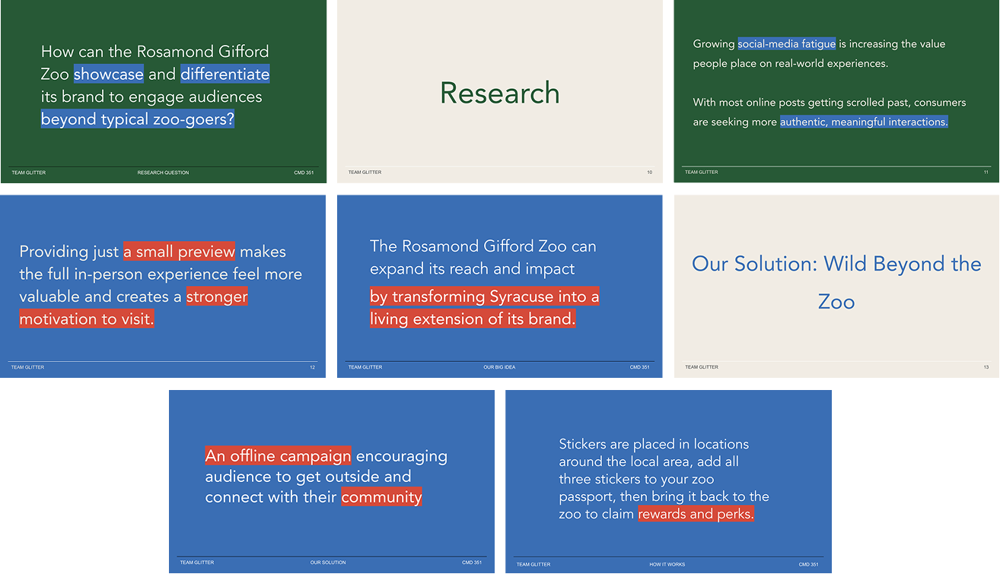

Rosamond Gifford Zoo: Brand Experience & Design Thinking Project
UX / Experience Design, Design Thinking & Brand StrategyCollaborative design-thinking project developed for the Rosamond Gifford Zoo in Syracuse. Reimaging the zoo’s brand as a citywide experience, using storytelling and interactive design to extend conservation messaging beyond zoo gates.
Context & Overview
The project was a 15-week endeavor with a real-client design challenge for the Rosamond Gifford Zoo. The course was structured around three major phases, and with each phase our groups were reshuffled, as a result we repeatedly inherited another team’s work, built on their research, and pushed the project forward.
Each week, our group was responsible for developing the inherited ideas, pushing them, and presenting work, findings and ideas that showed clear progress. Mirroring real professional handoffs, teaching us how to collaborate across teams, absorb new information quickly, and maintain continuity in a long-term project.

Design Thinking
Instead of moving through these steps in a straight line, we constantly cycled back to earlier discoveries, revisiting research, reframing problems, and integrating new insights as they emerged
Problem Solving
This semester pushed us beyond traditional problem-solving and into problem finding, a deeper, more investigative approach to design. Instead of simply responding to what the client asked for, we learned to look beneath their initial requests to uncover the root issues.
This process required more than surface-level analysis: we learned to ask better questions, we interviewed real people, we gathered diverse perspectives, and repeatedly visited the zoo to experience it firsthand. By digging deeper, we developed a clearer understanding of the client’s true challenges and were able to propose solutions that were more meaningful, strategic, and impactful.
Teamwork
Teamwork this semester went beyond our assigned groups, our entire class functioned as one collaborative team. We constantly checked in with classmates who previously handled our project, and made sure we were able to present the client with five unique solutions, each targeting a different issue.
Within our small groups, we organized meeting times, divided tasks, and brainstormed together to move the project forward each week. The process required clear communication, flexibility, and mutual support, closely mirroring how real design teams operate across shifting roles and shared responsibilities.
Research
To better understand why people do not frequently visit the zoo, our team conducted extensive research. I took the lead on this effort by performing targeted secondary research and conducting a follow-up interview with an individual deeply familiar with the zoo experience. This person has visited the zoo throughout their childhood, worked with the County Zoo’s and now currently works at a nonprofit supporting the zoo’s mission. Leading these activities allowed me to uncover nuanced insights into both visitor behaviors and the challenges faced by zoo staff, complementing our team’s broader research findings.
Iteration & Pivot
In the final phase of the project, our teams were reshuffled for the third time and the new team I found myself in once again inherited a concept from a previous group and develop it further. The idea we received presented an early challenge. Through research and stakeholder constraints, we ended up needing to make a pivot in both concept and language.
We explored workarounds, using social media polls and challenges to encourage community participation and self-identification with the zoo’s brand. While the concept aligned with our research, feedback revealed that it leaned too heavily on social media and was lacking visually
To better align with our research question, we revisited an earlier idea shifting the zoo’s storytelling beyond digital platforms and into the Syracuse community itself. After further critique, we identified issues of complexity and visual inconsistency and, with one week remaining, worked hard to fully refine the concept.
Final Direction
The final solution became a two-part campaign: a simplified scavenger hunt placed in familiar Syracuse locations, paired with a supporting social media advertising campaign. Together, these elements create a cohesive brand experience that uses storytelling to highlight the zoo’s commitment to conservation, education, and community connection.
Final Deck
Final Deliverables
Here I led the design of the pamphlet’s interior layout and conducted supporting research to validate our solution and its effectiveness. I also contributed to strategic discussions around key details, including sticker placement, advertising locations, and the development of the campaign’s brand guidelines.

Teamwork & Cohesion
With just one week remaining before the final presentation, our team came together to realign around a clear direction. Through focused collaboration and open communication, we refined our concept into a solution that felt intentional, cohesive, and grounded in research.
Personal Takeaways
This project reinforced the importance of strong research as the foundation for design-driven solutions by learning how to ask better questions, identify real problems, and uncover meaningful insights. It also taught me how to adapt within shifting team dynamics, how to stay flexible through constant changes, and how to collaborate effectively under pressure. Most importantly, it showed me how perseverance and clear communication can transform uncertainty into a strong, thoughtful outcome.
Designer
Academic Project